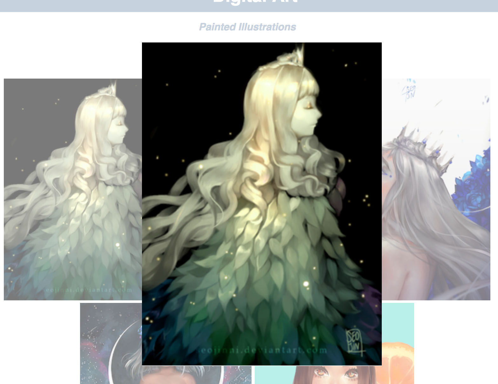
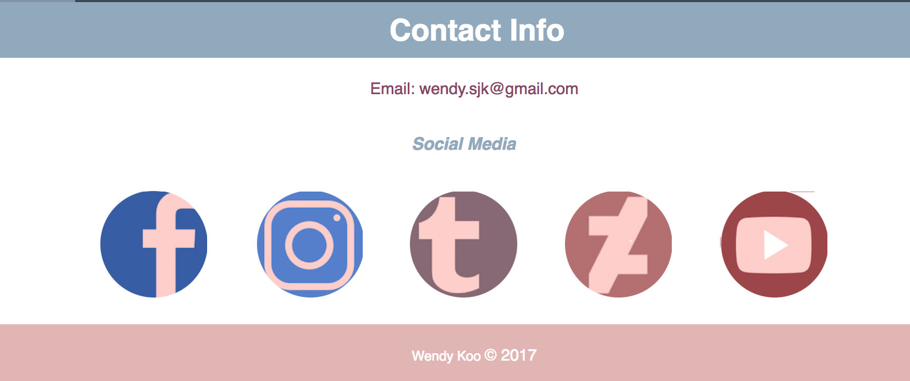

Web Site Specification
Final Project Proposal
For my final site project, I have decided to enhance my current portfolio site. Because I could potentially use the site for future employers, I want it to not only look appealing but also function as efficient as possible. Thus, the three changes I want to apply to the site include adding a slide for my home page, adding hover and pop-up effects to my gallery images, and reorganizing and improving current site compositions.
For the first enhancement, this change was influenced by Loish's portfolio site , where she utilizes a scroll/slide effect to exhibit multiple pieces of her artwork on one page. I want to incorporate a similar effect (prototyped in the mock-up image below) as it would offer more content to explore on the opening site. Basically, the current image will have an indication that it is selected (whether it has a stroke/border or the other images have lowered opacity, or both) while the full view will be featured on the main home space. With more art to show adds more possibilities to pique an interest. Also, the interactivity may offer some additional appeal to the home site.
Change 2
Another change I intend to add to my current site is to implement a hover effect to the images in my gallery, and to also have a bigger version to pop-up on the center of the screen when clicked on. It will give the viewer a better look into the image they choose and show more details. An example of what I mean can be shown in the mock up below.
Change 3
Lastly, I want to improve the overall compositions in some of my tabs, placed for convenient browsing and navigating. Small other changes include an update to some assets, including making the social media links from square icons to circular ones.
